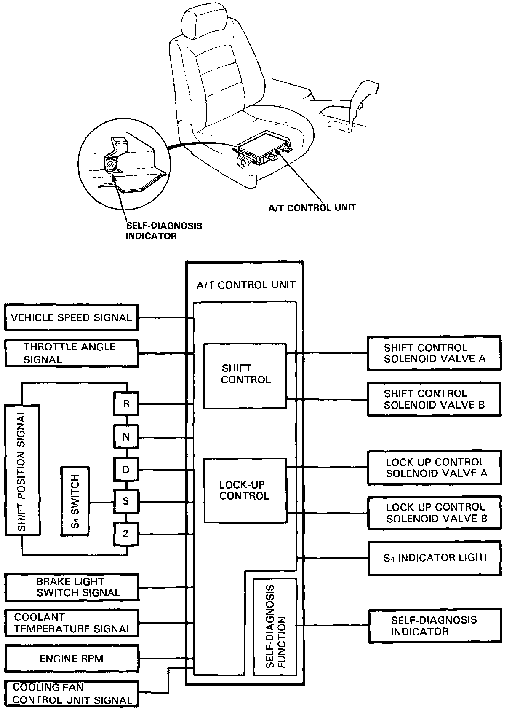
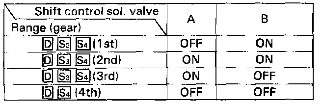
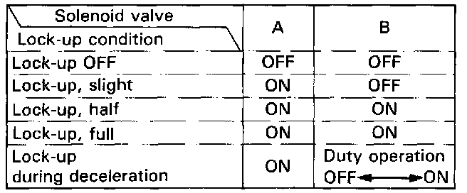

Coupe

ELECTRONIC CONTROL SYSTEM
The electronic control system consists of the automatic control unit, sensors, and 4 solenoid valves. Shifting and lock-up are electronically controlled for comfortable driving under all conditions.
The automatic control unit is located under the passenger's seat.

Getting a signal from each sensor, the automatic control unit detects the appropriate gear shifting and activates shift control solenoid valves A and/or B.
The combination of driving signals to shift control solenoid valves A and B is shown in the table.

From sensor input signals, the automatic control unit detects whether to turn the lock-up ON or OFF and activates lockup control solenoid valve A and/or B accordingly.
The combination of driving signals to lock-up control solenoid valves A and B is shown in the table.